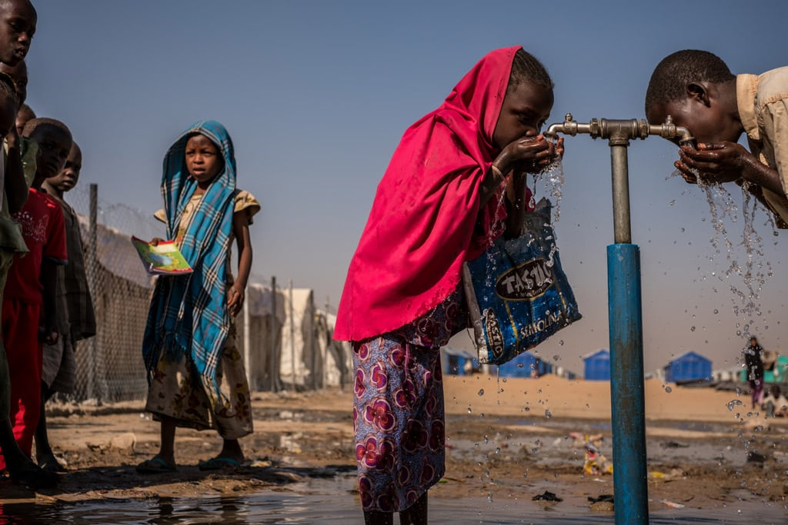

El acceso al agua potable y al saneamiento adecuado son los recursos más importantes de la salud pública para prevenir las
enfermedades infecciosas y proteger la salud de las personas, además de ser esenciales para el desarrollo.
El agua dulce es un recurso esencial para la salud de las personas, así como para la seguridad alimentaria, el desarrollo
económico y el ecosistema. Todos estos planos se ven afectados por su creciente escasez, que constituye uno de los principales
problemas globales de la humanidad y que se vislumbra como una de las principales causas de conflictos en el futuro.
La calidad del agua le confiere la condición de potabilidad. El agua potable es la que, en teoría, no contiene elementos que
suponen riesgo para el consumo humano o para cualquier uso doméstico, incluyendo la higiene personal (OMS, 1998:5).

La agricultura es, con diferencia, el mayor consumidor de agua a nivel mundial, representando el 70% de las extracciones
de agua en todo el mundo, aunque esta cifra varía considerablemente entre países. La agricultura de secano es el sistema de
producción agrícola predominante en todo el mundo y su productividad actual es, en promedio, un poco más de la mitad del
potencial a obtener sobre una gestión agrícola óptima. Para 2050, la agricultura tendrá que producir un 60% más de alimentos
a nivel mundial y un 100% más en los países en vías de desarrollo.
La industria y la energía juntas representan el 20% de la demanda de agua. Los países más desarrollados tienen una proporción
mucho mayor de extracciones de agua dulce para la industria que los países menos desarrollados, donde predomina la
agricultura. El equilibrio entre los requisitos de sostenibilidad frente a la visión convencional de la producción industrial en
masa crea una serie de interrogantes para la industria. A gran escala, la globalización y la forma de extender los beneficios de
la industrialización a todo el mundo equitativamente y sin impactos insostenibles sobre el agua y otros recursos naturales es
la cuestión clave.
Los ecosistemas. Quizás el reto más importante para el desarrollo sostenible que ha surgido en las últimas décadas es el
alcance de la crisis ecológica global, que se está convirtiendo en una barrera para el desarrollo humano. Desde el punto de vista
ecológico, los esfuerzos para un desarrollo sostenible no han tenido éxito. La degradación del medio ambiente mundial ha
alcanzado un nivel crítico, con los principales ecosistemas acercándose a límites que podrían desencadenar un colapso masivo.
La creciente comprensión de los límites planetarios globales, que deben ser respetados para proteger los sistemas de soporte
de la vida de la Tierra, tiene que ser la base del futuro marco de desarrollo sostenible.
Ciudades. Más de la mitad de la población ya vive en áreas urbanas y, para 2050, se espera que más de dos tercios de una
población mundial de 9.000 millones viva en ciudades. Por otra parte, la mayor parte de este crecimiento ocurrirá en los países
en vías de desarrollo, que tienen una capacidad limitada para hacer frente a estos rápidos cambios. El crecimiento también
dará lugar a un aumento del número de personas que viven en barrios marginales y que suelen sufrir unas condiciones de vida
muy pobres, sin acceso o con un acceso inadecuado a agua y saneamiento. Por lo tanto, el desarrollo de los recursos hídricos
para el crecimiento económico, la equidad social y la sostenibilidad ambiental está estrechamente vinculado con el desarrollo
sostenible de las ciudades.
El sector doméstico representa el 10% del uso total de agua. Y, en todo el mundo, se estima que 748 millones de personas
siguen sin tener acceso a una fuente mejorada de agua y que 2.500 millones siguen sin acceso a unos servicios de saneamiento
mejorados.